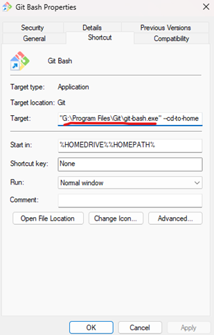
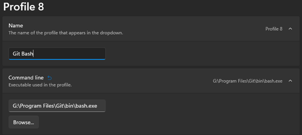
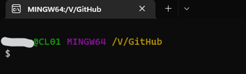

How to add Git Bash to Windows Terminal?
What is Windows Terminal?
Windows Terminal is an awesome Command Line Tool. I use it every day and you should also! In Windows Terminal you can run a normal CMD, PowerShell, Bash, Azure Cloud Shell and Linux Subsystems. Yeah as I mentioned, Windows Terminal is definitely one of the better things from Microsoft.
Adding Git Bash to Windows Terminal
First, search for Git-Bash in the Windows search bar and click on "Open file location"
Attention, the path is a shortcut! So right click on the Git Bash shortcut, under "target" you can see the original path of your Git Bash.

If you go with this path and you open Git Bash in Windows Terminal, it will open a separate Windows similar to Git Bash.
So in the directory where the git-bash.exe is, go to the "bin" folder and now you can see an exe named "bash.exe". This is the right one!
Add Profile in Windows Terminal
Open Windows Terminal, click on the “dropdown arrow” next to the plus and choose “settings” or ctrl+. Go to the “profiles section” and click on “add a new profile” and then “new empty profile”.
We will focus on the name and the command line path. Add a Name and browse for your path bash.exe in the bin folder and not git-bash.exe! Save and now you can access your Git Bash by selecting Git Bash (name) in the dropdown.

HAVE FUN!
